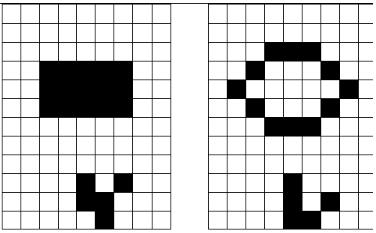

The Game of Life (also called Life) is a cellular automaton proposed in 1970 by the British mathematician John Horton Conway. In reality, it is a simulation rather than a game with players. It takes place on an infinite grid, where each cell may be occupied by an organism or not. Occupied cells are called alive and unoccupied cells are called dead. In each generation, the cells that are alive may change their state based on the number of neighboring cells that are alive according to the following rules:
The following figures illustrate two consecutive states of a Game of Life configuration.

In this problem, we will consider the grid to be finite and that the cells surrounding it are always dead.The first line contains three positive integers: the number of rows L and columns C that define the grid size of the game, and the number of iterations I to perform. (1 <= L, C, I <= 30)
This is followed by L lines of characters representing the current state of the game. Dead cells are represented by '.' and alive cells by 'O'.
You should print the state of the game after I iterations, that is, print the matrix representing the game grid with dead cells marked as '.' and alive cells as 'O'.
Input
5 5 5 ..... ..... .OOO. ..... .....
Output
..... ..O.. ..O.. ..O.. .....